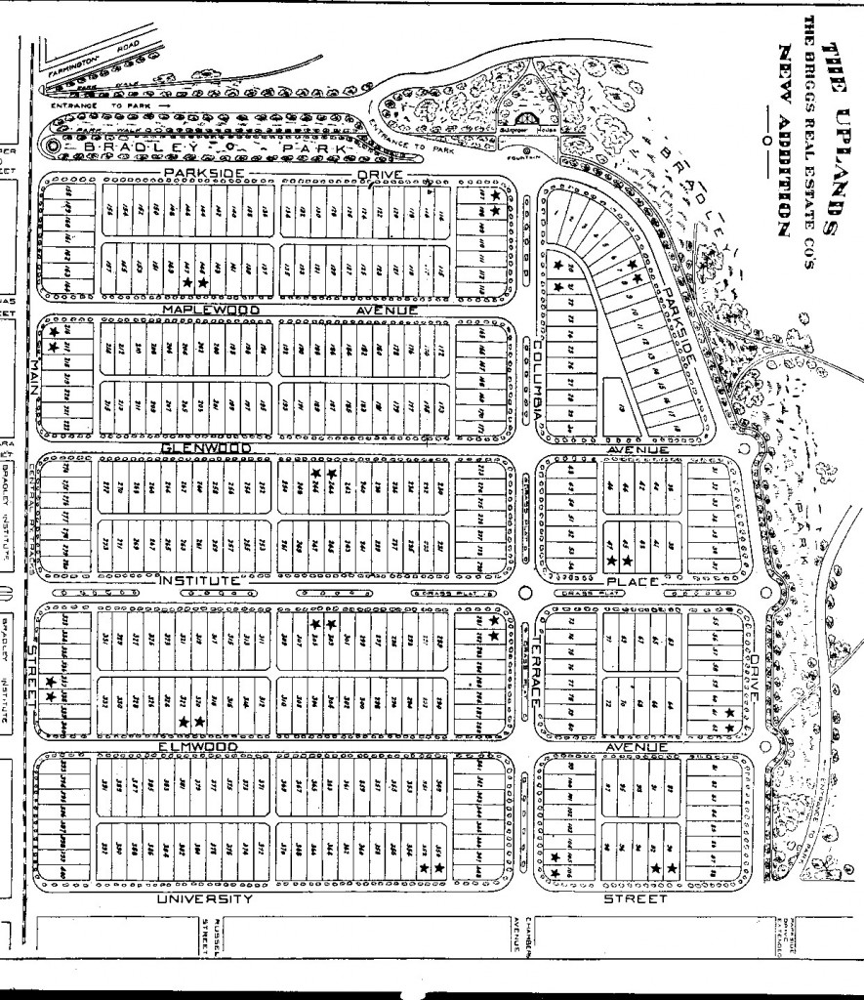
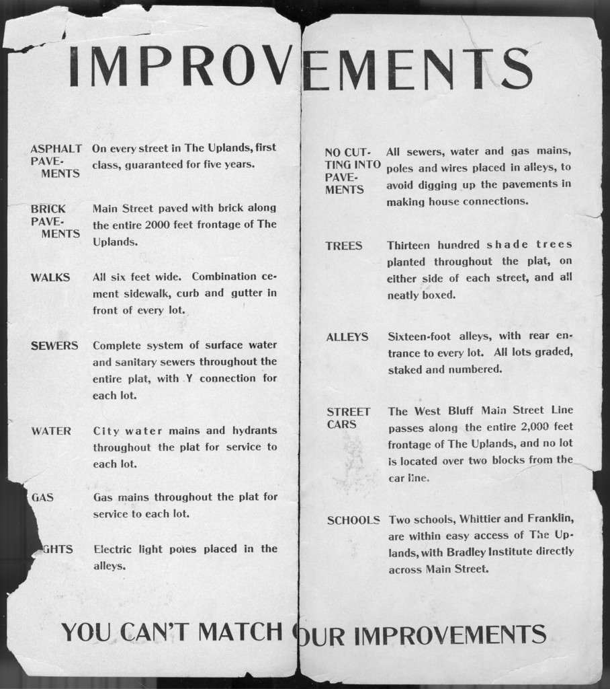
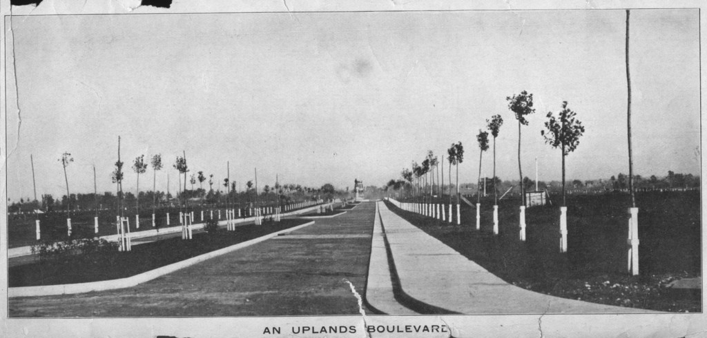

Founded 1902
The story of
The Uplands
“It is a nice name—The Uplands—breezy-like and suggestive of height and clear sweep.”The Peoria Star, June 6, 1902

From Bradley Farm to a new residential addition
In late 1901, O. L. Woodward, S. L. Briggs, and their partners negotiated to acquire roughly 83 acres near Bradley Polytechnic Institute. Their plan called for paved streets, sewers, sidewalks, and extensive tree planting before lots were offered for sale.
The Briggs Company asked the City to incorporate the plat while plans advanced to extend transportation and improve Main Street. As the new subdivision took shape, Lydia Bradley donated an adjoining stretch of hill and valley to the Park Board, extending Bradley Park toward University Street and the future Uplands.
A name chosen from thousands
A public naming contest drew more than 4,000 suggestions. Mrs. William Ker won the $50 gold prize with “The Uplands” and donated her winnings to the Bradley Home for Aged Women.

The sale begins
Four hundred lots were prepared for sale. Contemporary accounts reported rapid demand: 184 lots sold within the first half hour and roughly two-thirds by the end of the opening day.
Construction soon followed. The house at 1025–27 North Elmwood Avenue, reported in 1903 as the first occupied residence in the addition, still stands.
Lots assigned by drawing
At a shareholders’ meeting in the Grand Opera House, names and lot numbers were placed in separate churns and drawn together. The process paired each syndicate share with a deed. Afterward, a newspaper described a steady stream of new owners visiting the neighborhood to see their lots.
An early tradition of collective stewardship
The Uplands Improvement Association was established in May 1903—identified in the legacy research as Peoria’s first neighborhood homeowners association. Its successor, the Uplands Residential Association, continues the neighborhood’s long practice of caring for shared spaces, communicating across blocks, and organizing around common concerns.

A neighborhood shaped by park and place
The Uplands is bounded by Main Street and Bradley University to the south, University Street to the east, and Parkside Drive and Laura Bradley Park to the west. The park, boulevards, historic homes, and walkable connection to nearby institutions remain central to neighborhood life.
Upper Laura Bradley Park is now home to Never Extinct: A Pictorial History of the Indigenous People, a bronze work by Peoria sculptor Preston Jackson honoring the Indigenous peoples connected to the Illinois River Valley.